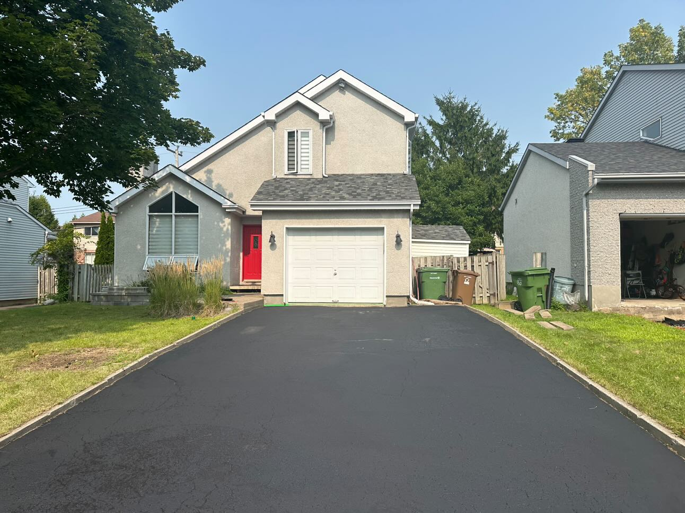

Our Process
- Clean the Driveway: We start by using a blower or pressure washer to thoroughly remove all dirt, debris, and stains from the driveway.
- Apply the Sealer: Next, we evenly apply the driveway sealer with a squeegee, making sure to achieve full coverage.
- Wait for Curing: Finally, we allow the sealer to cure by waiting 24 hours before walking on the driveway and 48 hours before driving on it.

